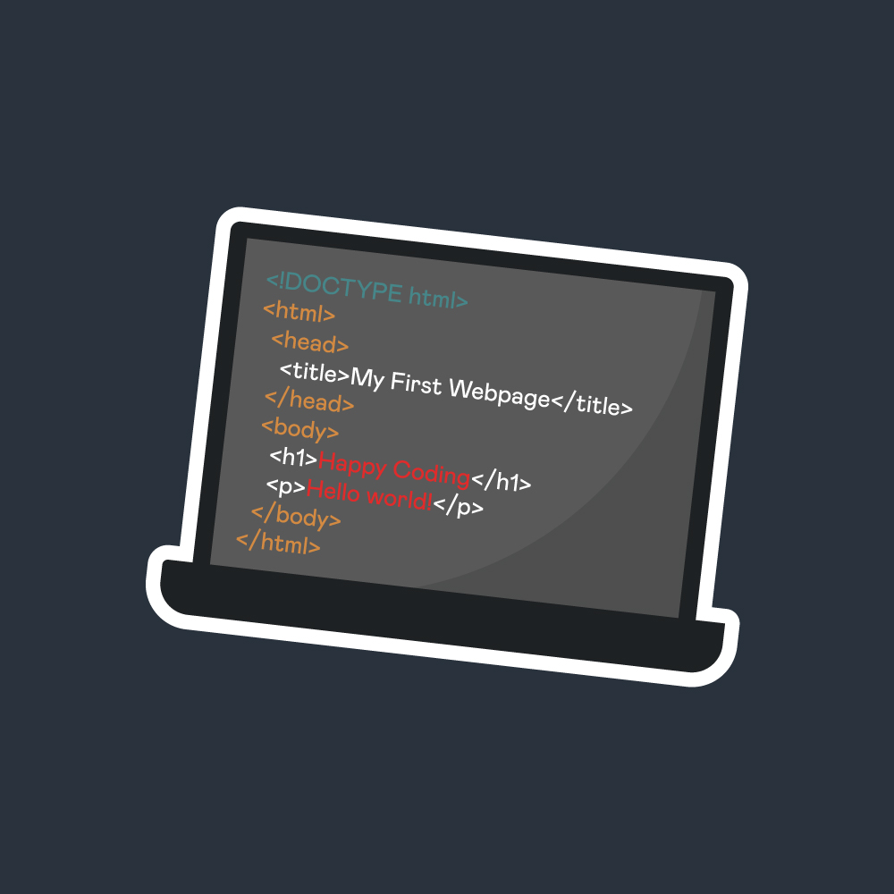

Se você tem interesse em tecnologia, lógica e deseja criar websites e aplicações dinâmicas, o Curso Técnico em Informática, com foco em Programação Web, é a porta de entrada ideal para uma carreira promissora e em constante crescimento! Este curso é cuidadosamente estruturado para fornecer as habilidades essenciais que o mercado de desenvolvimento web exige. Ele combina teoria e prática, preparando você para atuar na construção de soluções digitais modernas.
As principais disciplinas do curso são os pilares que sustentarão sua jornada como desenvolvedor web:
Ao concluir o curso, você estará apto a trabalhar na criação e manutenção de websites, sistemas e aplicações web para empresas de diversos portes. O mercado de trabalho está aquecido, e o domínio dessas tecnologias centrais coloca você em uma posição de destaque para atuar como Desenvolvedor Júnior, Web Designer com foco em implementação ou Assistente de Desenvolvimento.
Invista no seu futuro digital e transforme sua paixão por tecnologia em uma carreira de sucesso!

A informática se tornou uma das habilidades mais valorizadas e requisitadas no mercado de trabalho atual. Com a digitalização crescente das empresas e a transformação dos processos produtivos, o conhecimento em tecnologia e informática não é mais opcional — é essencial para quem deseja se destacar e conquistar boas oportunidades profissionais.
Praticamente todas as empresas, independentemente do setor (comércio, indústria, serviços, educação, saúde, entre outros), utilizam sistemas digitais para organizar suas operações, comunicação e atendimento. Assim, profissionais que dominam o uso do computador e das principais ferramentas digitais têm uma vantagem competitiva significativa. Saber trabalhar com pacotes de software como editores de texto, planilhas eletrônicas e programas de apresentação é fundamental para executar tarefas diárias, elaborar relatórios, planejar atividades e apresentar resultados de forma clara e eficiente.
Além das áreas diretamente ligadas à tecnologia, como desenvolvimento de software, análise de sistemas e suporte técnico, outras profissões também exigem conhecimentos em informática, incluindo:
Cada vez mais, as empresas buscam profissionais que consigam integrar habilidades digitais aos seus processos para aumentar produtividade e inovação. Oportunidades para quem domina informática Ter conhecimento em informática abre portas para vagas variadas, desde funções básicas até cargos mais especializados. Algumas oportunidades incluem: Assistente administrativo Analista de dados Técnico em suporte de TI Auxiliar de escritório Operador de sistemas Profissional de marketing digital Além disso, dominar informática é um ponto de partida para crescer profissionalmente e migrar para áreas técnicas, como programação, design, gestão de projetos e cibersegurança. Competências valorizadas pelas empresas
EIXO TECNOLÓGICO:
Informação e Comunicação
CARGA HORÁRIA:
1200 h
INFRAESTRUTURA
ÁREA TECNOLÓGICA:
Informática